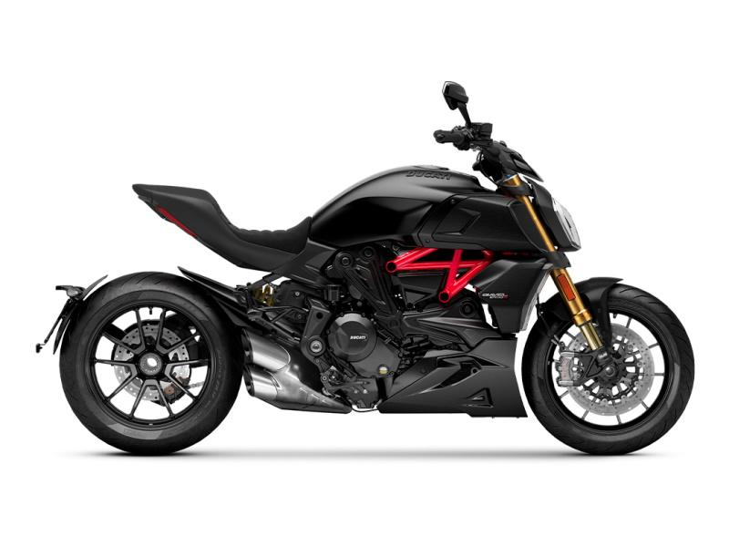

One Owner - Clean Title - 500 Miles - Free Delivery
2022 Ducati Diavel

Powerful. Muscular. But also agile and effective between the curves for maximum riding enjoyment. The Diavel 1260 combines the performance of a maxi-naked with the ergonomics of a muscle cruiser. Its design reinterprets the Diavel style with a contemporary look and integrates perfectly the 159 HP Testastretta DVT 1262 engine, beating heart of this new Diavel 1260. The novelty of the Model Year 22 is characterized by the choice of asymmetrical and refined graphics that combine glossy and matt black as the main colors, to which are added sporty touches in yellow, including the frame, the lower part of the tail, the dedicated seat badge and some details of the bike. The Diavel 1260 S “Black and Steel” joins the S version in Thrilling Black & Dark Stealth color with red frame and black wheels, will be available in dealerships later on in 2021. The standard version is available in Dark Stealth color with black frame and black wheels.